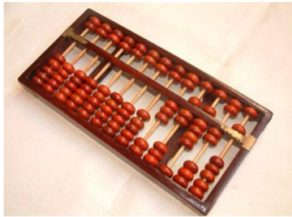
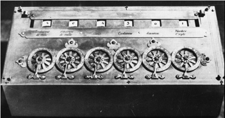
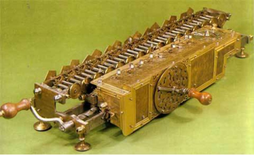
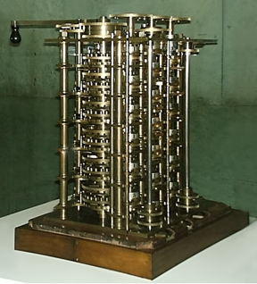
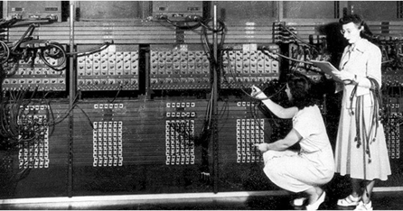
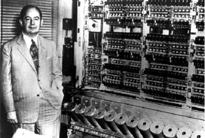

计算机的发展史
Contents
计算机的发展史#
早期计算工具#
算盘
算盘起源于中国，距今已经有2600多年历史
上半部每算珠代表5，下半部每算珠代表1
从右至左代表了十进制的个、十、百、千、万…

文艺复兴时期#
这个时期艺术和科技知识大爆炸，数学与科学开始成为最重要的领域。
问题: 怎样才能更有效率的进行计算？
普遍认为的第一台计算机#
帕斯卡（1623-1662）

12岁独自发现了“三角形的内角和等于180度”
16岁参加巴黎数学家和物理学家小组
17岁写成《圆锥截线论》震惊数学家笛卡尔
18岁开始设计计算机，帮助父亲计算税率
19岁第三个模型在1642年研制成功

帕斯卡加法器
可以直接对两个数字进行加减运算。
能通过重复加减运算以达到乘除运算的目的。
滚轮式计算器，操作比较繁琐。
莱布尼茨#

1673年他在帕斯卡加法器的基础上，建造了一台能够进行四则运算的计算机器，轰动欧洲
计算精度可以达到16位
工业革命时期#
巴贝奇#

1822年巴贝奇制造出第一台差分机
它可以处理3个不同的5位数
计算精度达到6位小数
1834年提出分析机的概念
机器共分为三个部分：堆栈、运算器、控制器
企图用机械方式（蒸汽动力）实现一般意义下的计算过程
计算用的程序和数据存储在穿孔卡片上
机械计算机的不断发展#
霍列瑞斯#

源自美国人口普查
1880的人口普查1887年才完成
1890年的可能需要1900年才能完成
Hollerith制表机应运而生
6个月即完成1890年人口普查数据汇总
随后两年完成所有统计工作
1896年，Hollerith成立“计算制表记录公司”，1924年改名为“国际商用机器公司”（IBM）
普遍认为的第一台计算机#
ENIAC（Electronic Numeric Integrator and Computer）
电子数字积分计算机

由Upenn摩尔学院莫契利和埃克特设计
1943年开始，1945年完成
17468只电子管，7200个二极管，70000多只电阻器，10000多只电容器，电路焊接点50万个
174000瓦功耗
30米长，3米高，30吨重，占地面170平方米
每秒5000次加法，3/1000秒完成两个10位数乘法
冯诺依曼：现代计算机之父#

1945年3月，伟大的计算机先驱冯诺依曼来到摩尔学院，与莫契利和埃克特进行了两天讨论，拟定了存储程序式的电子计算机的方案。
EDVAC于1952年制造完成
是第一台存储程序式的计算机
是现代所有计算机的原型和范本
作业#
绘制计算机的发展历史。
要求：通过查阅资料和课件来搜集计算机历史的信息，并通过手绘或者电脑设计一幅计算机发展史图。图中需要包括：
时间轴
计算机的起源和早期发展
现代计算机的发展
智能手机和移动设备的发展历史
可以使用铅笔、彩笔或绘图软件设计计算机发展历史的时间轴。通过图像需要反映出每个时期的计算机技术，并使用不同的颜色、符号和其他图形来区分不同的计算机类型和阶段。
在图表或时间轴上需要添加一些注释，以解释每个时期的主要发展趋势、重要事件和技术变革。注释应该简短明了，用语清晰，便于其它同学理解。
参考资料：
The History of Computing: https://www.youtube.com/watch?v=-M6lANfzFsM&t=175s
Evolution of Computers: https://www.youtube.com/watch?v=tw_bsmVYIyM
How an 1803 Jacquard Loom Led to Computer Technology : https://www.youtube.com/watch?v=MQzpLLhN0fY
Steve Jobs: How a Dreamer Changed the World : https://www.youtube.com/watch?v=5fI3zz2cp3k
https://limboy.me/posts/computer-history/
https://www.scholat.com/teamwork/showPostMessage.html?id=2833